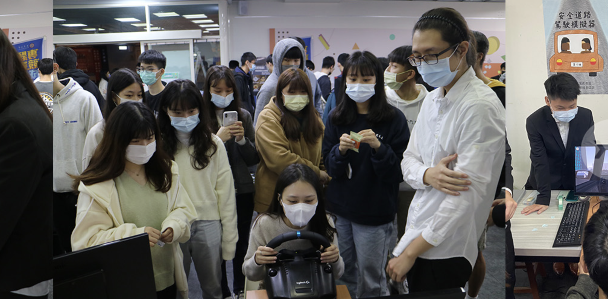
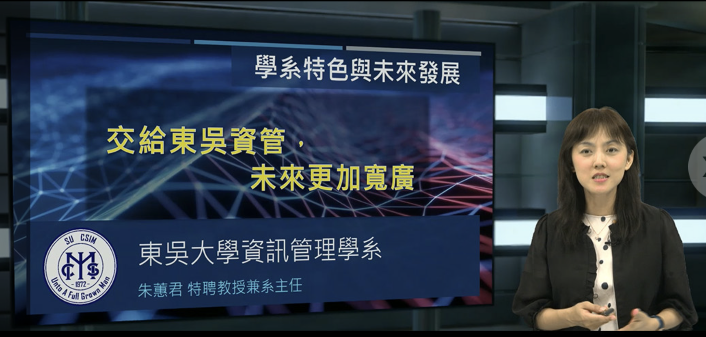

演講資訊
培育新世代雲端科技應用人才！銓鍇國際受邀擔任東吳大學資管系一日講師
" 賀！本系朱蕙君教授、林娟娟教授、黃日鉦教授
入榜全球前 2% 頂尖科學家！ "
教師教學成果
2022全國資訊管理前瞻技術研討會暨專題競賽榮獲佳績！
劉譯閎老師指導學生參加2023大專校院資訊服務創新應用競賽榮獲佳作！

課程介紹
本系於學士班規劃三個特色課程學群：管理與創新學群、資訊技術核心學群、人工智慧學群。 並針對學士班高年級規劃一學年「專題實驗」總結性課程，統整四年所學的專業知識於實務應用 碩士班規劃了三個領域：企業電子化領域、雲端與智慧應用領域以及多媒體與行動應用。
專題研究
東吳資管系50歲囉！
2022年適逢東吳大學資訊管理學系50週年系慶，
2022/11/12 星期六中午於台北花園大酒店 (Taipei Garden Hotel) 舉辦系友團圓餐會，
此外，我們也規劃了一系列的活動歡慶50週年系慶！

修業規定
學士班 (111-112學年度)
修業年限：4~7年畢業學分：131學分（含校必修27學分，系必修63學分，選修41學分）
校外實習（一）4學分：列入本系畢業學分，每週實習約3天，為期約14週。 學生仍須符合本校至少修讀9學分之規定。